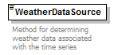

| diagram |  | ||||||||||||||||||||||||||||||
| namespace | http://nrel.gov/schemas/bedes-auc/2014 | ||||||||||||||||||||||||||||||
| type | restriction of xs:string | ||||||||||||||||||||||||||||||
| properties |
|
||||||||||||||||||||||||||||||
| used by |
|
||||||||||||||||||||||||||||||
| facets |
|
||||||||||||||||||||||||||||||
| annotation |
|
||||||||||||||||||||||||||||||
| source | <xs:element name="WeatherDataSource"> <xs:annotation> <xs:documentation>Method for determining weather data associated with the time series</xs:documentation> </xs:annotation> <xs:simpleType> <xs:restriction base="xs:string"> <xs:enumeration value="On-Site Measurement"/> <xs:enumeration value="Weather Station"/> <xs:enumeration value="TMY"/> <xs:enumeration value="TMY2"/> <xs:enumeration value="TMY3"/> <xs:enumeration value="IWEC"/> <xs:enumeration value="CWEC"/> <xs:enumeration value="CZRV2"/> <xs:enumeration value="Other"/> </xs:restriction> </xs:simpleType> </xs:element> |